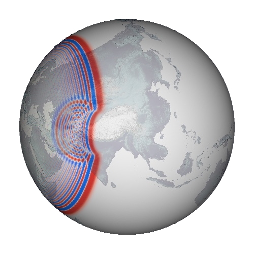

Research
With respect to earthquake simulations, we are able to numerically compute the full seismic wavefield with increasing accuracy. Faster computers solve the forward problem for longer times and higher frequency contents. Numerical computations head towards increasingly complex simulations on new parallel systems. Exploiting these high-performance computations and harnessing their power for seismological purposes is important and fascinates me.
3D wave propagation
The spectral-element method provides a highly accurate and very fast
algorithm for the simulation of seismic wave propagation. Also, new parallel hardware systems have
emerged and studies suggest that software running on Graphical Processing Units (GPU) combined
with Central Processing Units (CPU) profit from astounding speed-ups (order of magnitude).
Seismic software on these new systems will allow for fully numerical tomographic studies of
highly complex geological structures, which have thus far been prohibitively expensive.
Together with the growing amount of seismic data, my hope is to harness these techniques
to better understand the Earth's interior. In order to produce new high-resolution images of Earth's
seismic structures, I spent a fair amount of time on code optimizations,
enhancing the existing spectral-element packages
SPECFEM3D and SPECFEM3D_GLOBE widely used in the seismological community.
Membrane waves
 In global seismic tomography, one challenging way to achieve high-resolution images of the Earth's interior is in elaborating more accurate theories. A promising approach seems to be Born theory, a single scattering theory, which becomes most important for seismic surface waves.
I was studying the propagation of surface waves, such as Rayleigh or Love waves at periods between 35 s and 150 s, and their scattering sensitivity. To gain a computational speed-up, reduction to two-dimensions can be done by the surface membrane wave method. Basically, it is wave propagation on a spherical membrane.
You will find some more
detailed informations
about how to deal with this nice issue on the following pages:
- The finite-differences code for wave propagation on
a spherical membrane
is available here: Membrane Waves
- The 3-D shear-velocity model of the European-Mediterranean region
is available here: Tomography
Ray tracing
Ray tracing is a nice and intuitive concept from optics. It is exploited in seismology in a variety of ways to get a better understanding of subsurface structures. In order to trace rays through any possible body, I was implementing a finite-element ray tracing algorithm, also known as cell ray tracer. You can find more details on the following pages.